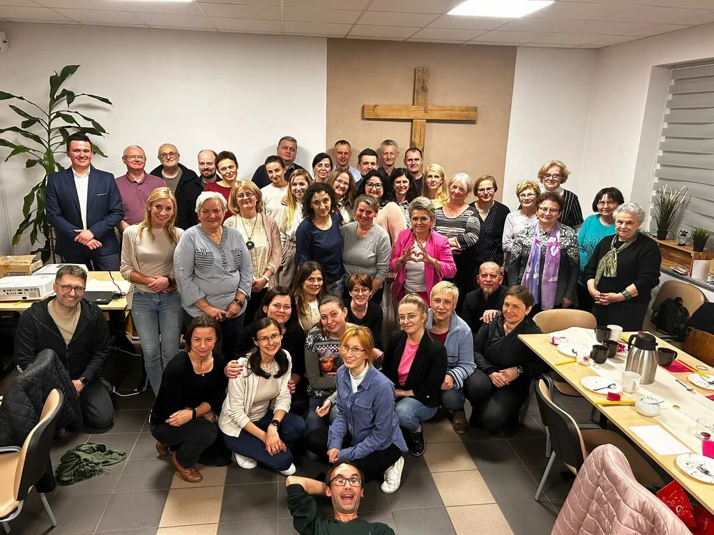
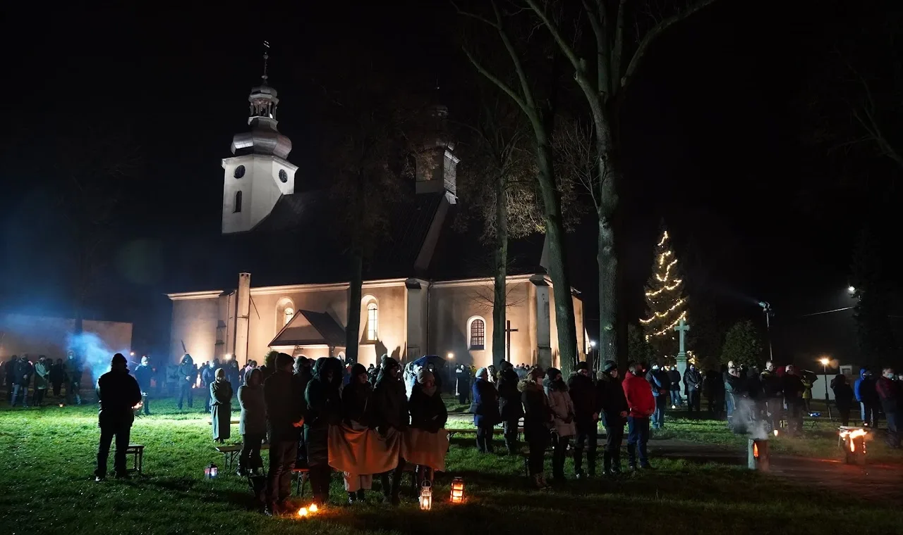

Inkubacja
Szkolenie, udział w istniejącej edycji, własna edycja ucząca i pierwszy publiczny start.
Odnowa parafii
Prosty format spotkania może otworzyć dłuższą drogę: odkrywanie wiary, wejście do ekipy, odpowiedzialność i zapraszanie kolejnych osób.
Cykl Bożej renowacji
Wybierz etap, aby zobaczyć jego znaczenie. To możliwa droga wzrostu, nie schemat narzucany każdej osobie.
Alpha tworzy przestrzeń, w której można pytać, słuchać i szukać bez presji. Pierwszym doświadczeniem jest gościnność i relacja, a nie wymaganie gotowych odpowiedzi.
Dlaczego to działa?
Kolejna edycja daje uczestnikom możliwość wejścia do ekipy jako pomocnicy. Uczą się słuchać, troszczyć o gości i budować atmosferę. Z czasem część z nich podejmuje rolę gospodarza lub koordynatora.
W ten sposób Alpha nie kończy się na jedenastu spotkaniach. Może stać się środowiskiem, w którym dojrzewają nowi posługujący i liderzy.

Etapy rozwoju
Nie trzeba przeskakiwać etapów. Ważniejsze są regularność, uczenie się i stopniowe przekazywanie odpowiedzialności.
Szkolenie, udział w istniejącej edycji, własna edycja ucząca i pierwszy publiczny start.
Kolejne edycje, budowanie ekipy oraz pierwszych gospodarzy i liderów.
Regularność, nowe grupy i konteksty, takie jak młodzież, małżeństwa lub rodzice.
Dojrzały zespół zaczyna wspierać nowe miejsca i dzielić się swoim doświadczeniem.

Więcej niż jeden program
Kiedy nowe osoby odkrywają wiarę, wchodzą do służby i dojrzewają do odpowiedzialności, powstają także kolejne inicjatywy. W Lubecku obok Alpha rozwijały się między innymi działania dla młodzieży, kawiarenka i inne formy spotkania.